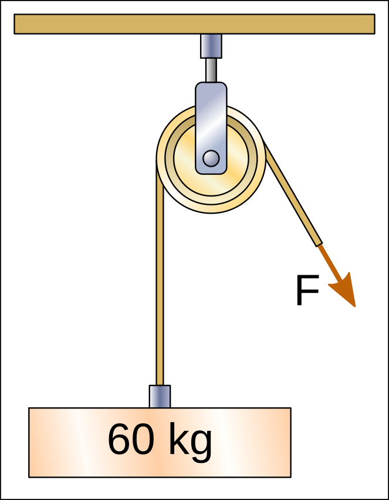
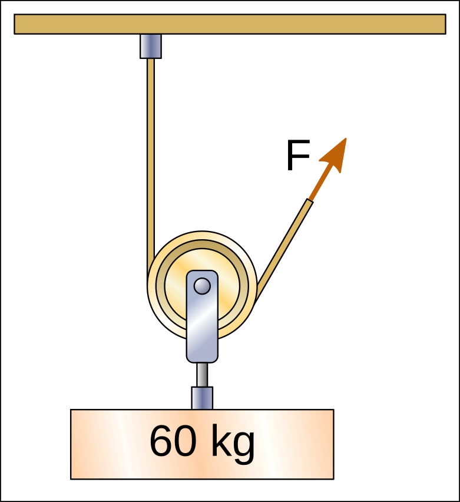
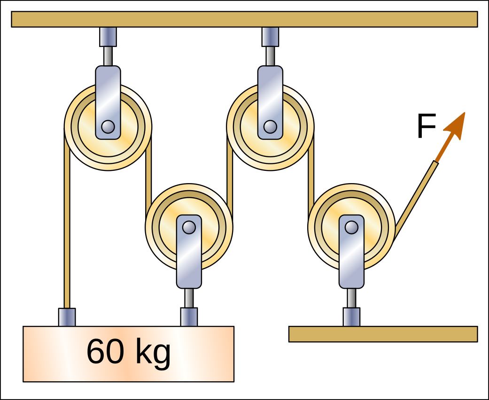

Poleas y Polipastos¶
Una polea es una máquina simple formada por una rueda acanalada por la que pasa una cuerda.
Aplicaciones de las poleas¶
La función de la polea es desviar la dirección y la posición de la cuerda y por lo tanto de la fuerza de tensión aplicada.
De esta manera la cuerda de un pozo puede levantar un cubo de agua haciendo fuerza hacia abajo lejos del brocal, lo que significa una ventaja al poder tirar desde una posición más cómoda.
Unas cortinas pueden abrirse y cerrarse tirando de dos cuerdas hacia abajo, al nivel de nuestra mano. La función de las poleas aquí es mover la fuerza desde el nivel de nuestra mano hasta el techo, donde se encuentra el raíl de las cortinas.
{kind=link}


En todos los casos anteriores las poleas desvían la dirección y la posición de la fuerza, pero no reducen la fuerza necesaria para levantar el peso. Por lo tanto todas estas poleas necesitan que se estire el extremo de la cuerda con una fuerza de 60kgf (60 kilogramos-fuerza) para poder levantar los pesos.
Polipastos¶
Un polipasto está compuesto por al menos una polea móvil, enganchada en el peso que se quiere mover. El polipasto puede levantar pesos con ventaja mecánica, es decir, que podrá levantar un peso mayor que la fuerza aplicada sobre la cuerda.
Para calcular la fuerza necesaria para levantar el peso, hay que dividir el peso entre el número de tramos de cuerda que están tirando del peso hacia arriba.
En los siguientes polipastos hay 2 tramos de cuerda que tiran del peso hacia arriba y por lo tanto la fuerza que hay que realizar para levantar el peso se divide entre los dos tramos, con un resultado de 30kgf.
{kind=link}

En los siguientes polipastos hay 3 tramos de cuerda que tiran del peso hacia arriba y por lo tanto la fuerza que hay que realizar para levantar el peso se divide entre tres, con un resultado de 20kgf.


En los siguientes polipastos hay 4 tramos de cuerda que tiran del peso hacia arriba y por lo tanto la fuerza que hay que realizar para levantar el peso se divide entre cuatro, con un resultado de 15kgf.


Hay que tener en cuenta que a veces las poleas de no están enganchadas al peso y por lo tanto no cuentan a la hora de calcular la fuerza con la que hay que tirar de la cuerda.
En el siguiente polipasto hay 2 tramos de cuerda que tiran del peso hacia arriba y por lo tanto la fuerza que hay que realizar para levantar el peso se divide entre las dos, con un resultado de 30kgf.

En el siguiente polipasto hay 3 tramos de cuerda que tiran del peso hacia arriba y por lo tanto la fuerza que hay que realizar para levantar el peso se divide entre tres, con un resultado de 20kgf.
{kind=link}
Polipastos anidados¶
Un polipasto puede tirar de la cuerda de otro polipasto y en ese caso nos encontramos con un polipasto anidado. Cada uno de los polipastos divide la fuerza que hay que realizar sobre la cuerda.
En el siguiente polipasto, la polea de abajo divide entre dos tramos de cuerda el peso de 60kg, por lo que la primera cuerda tendrá una tensión de solo 30kgf.
La polea de arriba vuelve a dividir entre dos tramos de cuerda la fuerza de la primera cuerda, por lo que la tensión será de 15kgf. Esta será la fuerza F que hay que realizar para subir el peso.

Ejercicios¶
Ejercicios de poleas y polipastos para calcular la fuerza con la que debemos tirar de la cuerda para levantar un peso.